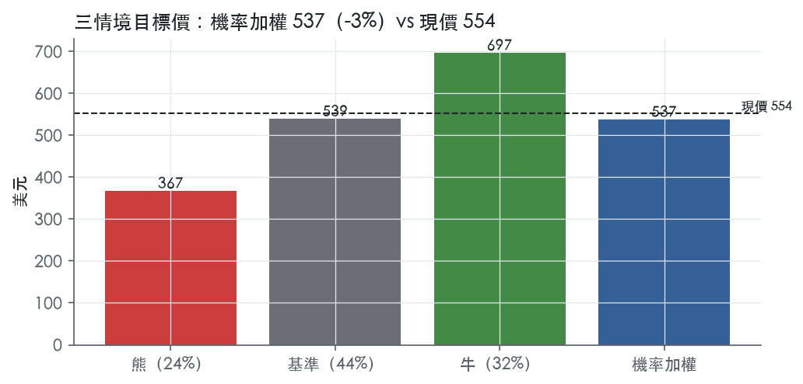
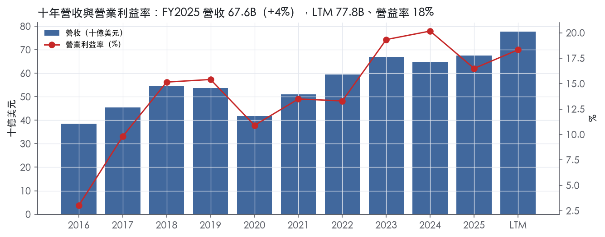
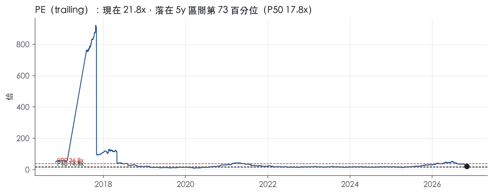
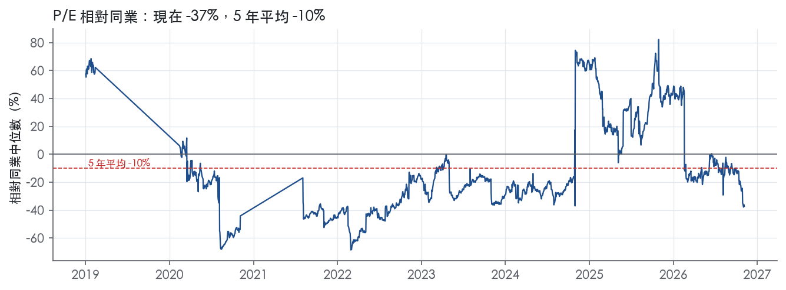
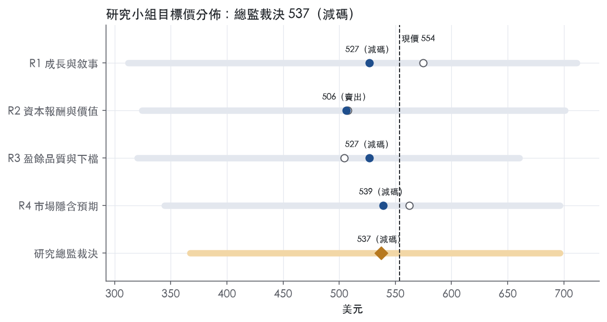
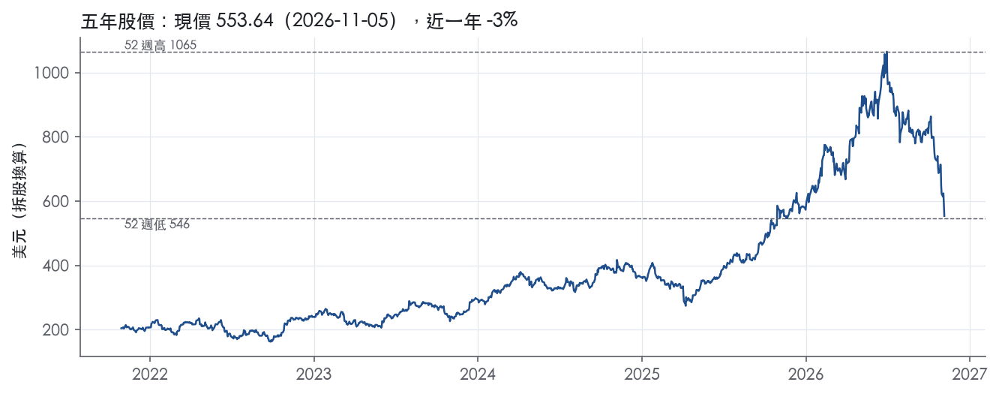

評等總表 › 工業 › CAT
估值已回公允，報酬仍不及門檻｜評等 減碼｜目標價 537
| 報告日 | 評等 | 目標價 | 當時股價 | 超額報酬 |
|---|---|---|---|---|
| 2026-11-05 | 減碼 | 537 | 554 | -11.7% |
| 2026-10-09 | 賣出 | 736 | 800 | -17.5% |
| 快評 | 動作 | 結論 |
|---|---|---|
| 2026-10-29 | 維持 | 獲利高於預測，維持賣出 |
| 評等 | 減碼 |
| 12 個月目標價 | 537 美元 |
| 現價 | 553.64 美元（2026-11-05） |
| 預期報酬 | 股價 -2.9%＋股息 1.1%＝總報酬 -1.8%；同業籃門檻 9.9%，超額 -11.7% |
| 估值方法 | P/E 18.0x，套在第 5–8 季的EPS（也就是一年後的未來四季） |
| 三情境 | 熊 367／基準 539／牛 697 |
| 研究流程 | 四位研究員兩輪辯論＋研究總監裁決 |
| 資料來源 | SEC EDGAR XBRL、Tiingo、FRED（全免費） |
估值已回公允，報酬仍不及門檻（研究總監裁決，四位研究員兩輪辯論後）
評等 減碼｜12 個月目標價 537 美元（總監三情境機率加權 548 與研究員中位數 527 各半）｜現價 553.64（2026-11-05）
預期報酬：股價 -2.9%＋股息 1.1%＝總報酬 -1.8%。同業籃門檻 9.9%，超額 -11.7%。
估值方法：P/E 18.0x，套在第 5–8 季的EPS（也就是一年後的未來四季）。三情境：熊 367（24%）／基準 539（44%）／牛 697（32%）。
什麼會讓研究總監改變看法：FY2026 年底積壓明顯高於 51.2B、公司給 2027 年雙位數展望，且無回收下營益率連兩季 ≥20%（證明積壓交付期定價力未稀釋），y2 營益率回到 19% 以上、倍數上修到前瞻帶 P90 20x 轉中性；建築產業價格實現轉負或 2027 年關稅指引上修，熊機率上調、倍數下修到帶 P50。
| 過去四季（實際，FY2026Q3） | 未來四季 | 第 5–8 季 | 第 9–12 季 | |
|---|---|---|---|---|
| 營收（B） | 77.8B | 87.1B | 92.3B | 96.0B |
| 營收成長 | 20.3% | 12.0% | 6.0% | 4.0% |
| 營業利益率 | 18.3% | 19.5% | 18.8% | 18.0% |
| EPS（美元） | 25.45 | 28.68 | 29.94 | 30.45 |
| EPS 成長 | 31.2% | 12.7% | 4.4% | 1.7% |
| 每股股息（美元） | — | 0.00 | 0.00 | 0.00 |
| P/E（現價） | 21.8x | 19.3x | 18.5x | 18.2x |
| 股息殖利率（現價） | 1.1% | — | — | — |
過去四季為申報數字；預測為研究總監的假設、程式計算。倍數與殖利率都用現價計算，用來看現價對應各期獲利的高低。
| 項目 | 上次（2026-10-13） | 這次（2026-11-06） | 變動 |
|---|---|---|---|
| 評等 | 賣出 | 減碼 | 變動 |
| 機率加權目標價（美元） | 736 | 537 | -27.0% |
| 超額報酬 | -17.5% | -11.7% | +5.8 pp |
| 目標倍數 | 25x | 18x | — |
| 未來四季營收成長 | 15.0% | 12.0% | -3.0 pp |
| 未來四季營益率 | 18.5% | 19.5% | +1.0 pp |
| 未來四季 EPS（美元） | 27.15 | 28.68 | +5.6% |
| 熊／基準／牛機率 | 19／56／25 | 24／44／32 | — |
程式計算；「未來四季」各自從當次報告的資料起點算。研究總監逐點說明見第八章「與上次報告比較」。
| 情境 | 機率（歷史） | 故事 | 未來四季營收成長 | 第 5–8 季營益率 | 倍數 | 目標價 | 股價漲跌 |
|---|---|---|---|---|---|---|---|
| 熊 | 24%（26%） | 對應風險表第 1 條（關稅 2.6B 未緩解再高 20%）與第 2 條（建築產業重演 2025 年 1.136B 不利價格），疊加本行下行路徑（銅 11,800、Baa 2.30）引發經銷商去庫存；倍數 16x 而非 R4 的 15x，因市場對谷底盈餘付較高倍數 | 8.0% | 16.5% | 16.0x | 367 | -33.7% |
| 基準 | 44%（41%） | 積壓撐住 2027 年雙位數成長、2028 年回到 5–7% 目標中段；IEEPA 回收退場、積壓交付期定價力正常化後營益率 18.8% 上下；市場對減速中的 CAT 付前瞻帶 P75 | 12.0% | 18.8% | 18.0x | 539 | -2.7% |
| 牛 | 32%（32%） | 資料中心發電（Q3 發電年增 30%）與北美基建延長週期、積壓續增，營益率回到 FY2024 高峰附近，倍數守住帶 P75–P90 不重複計價；對應本行上行路徑（銅 15,200、GDP 2.8） | 16.0% | 20.5% | 19.5x | 697 | 25.8% |
目標價由程式依研究總監的驅動與倍數計算；機率由研究總監給定。括號內是歷史頻率：把這檔股票過去十年 12 個月報酬的波動形狀，置中在基準情境，結果落在各情境附近的比例。

四位研究員用不同方法各自估值，回應研究總監的質疑後交出第二輪，最後由總監逐點裁決。各研究員的主張見第七章，裁決理由見第八章，完整論證見《研究底稿》。
| 立場（一輪→二輪） | 加權目標價（一輪→二輪） | 評等（一輪→二輪） | 第二輪倍數 | 熊～牛目標價 | |
|---|---|---|---|---|---|
| R1 成長與敘事 | 中性→看空 | 575→527 | 中立→減碼 | 17.0x | 312～712 |
| R2 資本報酬與價值 | 中性→看空 | 508→506 | 賣出→賣出 | 17.0x | 324～701 |
| R3 盈餘品質與下檔 | 看空→看空 | 504→527 | 賣出→減碼 | 17.5x | 320～661 |
| R4 市場隱含預期 | 中性→看空 | 563→539 | 減碼→減碼 | 18.0x | 344～697 |
| 研究總監裁決 | 看空 | 537 | 減碼 | 18.0x | 367～697 |
目標價由程式依各自的驅動與倍數計算；評等＝機率加權總報酬 − 同業籃門檻。
Caterpillar 是全球最大的建築與採礦設備、非公路柴油與天然氣引擎、工業燃氣渦輪機及柴電機車製造商¹。公司成立於1925年，原名 Caterpillar Tractor Co.，1986年在德拉瓦州重組為 Caterpillar Inc.¹。2025年銷售與營收為 67.59B 美元。客戶橫跨基礎建設、一般營建、租賃、採石與骨料、礦業、石油天然氣、發電、船舶、鐵路與工業應用¹。公司背後是全球最大的獨立經銷商網路之一，並透過 Cat Financial 提供融資服務¹。2025年公司提出新策略，使命為「解決客戶最棘手的挑戰」，三大成長支柱為商業卓越、先進技術領導者、轉型工作方式¹。本質上這是一家重資產、長週期、高進入門檻的全球設備＋融資複合體，景氣循環敏感度高但經銷商網路與售後服務建構了深厚護城河。
Caterpillar 目前以三大主要分部營運：動力與能源（Power & Energy）、建築產業（Construction Industries）、資源產業（Resource Industries），另有金融產品分部¹。建築產業主要服務基礎建設與房屋營建客戶，產品含瀝青攤鋪機、推土機、挖掘機、輪式裝載機等，並針對開發中市場推出 SEM 品牌機型以價格優先打入市場¹。資源產業服務礦業、重型營建、採石與骨料客戶，產品含電鏟、礦用卡車、鑽機、輪式鏟運機等，並銷售車隊管理、設備分析、自動化機械等技術服務¹。動力與能源涵蓋往復式引擎、發電機組、渦輪機、電動動力傳動系統、柴電機車及鐵路相關產品，並持續因應排放法規投入新產品開發¹。金融產品分部由 Cat Financial 與 Caterpillar Insurance Holdings 主導，提供貸款、循環帳戶、租賃等零售與經銷商融資產品，並涵蓋保險與再保險業務¹。從最新一季規模看，動力與能源 8.784B 美元為三大分部中最大，建築產業 7.983B 美元，資源產業 4.615B 美元，三者季增率分別為18%、18%、15%²。動力與能源的下游應用中，發電（Power Generation）單季 3.421B 美元、年增30%，是成長最快的應用別²。10-K 未揭露各分部占年度總營收的精確百分比拆分，僅提供單季絕對數字。
Caterpillar 透過全球經銷商網路銷售，美國境內41家、境外109家經銷商，服務190個國家¹。往復式引擎主要透過經銷商網路銷售，子公司 Perkins Engines 另有86家分銷商覆蓋183個國家，FG Wilson 品牌發電系統有108家分銷商覆蓋159個國家¹。渦輪機與機車等產品則直接銷售給終端客戶¹。日本市場例外，公司自有並經營 Nippon Caterpillar 經銷商，覆蓋約80%日本市場¹。經銷商協議為任一方可提前90天書面通知終止¹。從最新一季（2026Q3）地區別營收看，北美 12.017B 美元、年增24%，為成長最快區域，主因建築產業與資源產業在北美需求強勁²；歐非中東（EAME）3.728B 美元、年增15%；拉丁美洲 2.124B 美元、年增15%；亞太 2.813B 美元、年減2%，是唯一衰退的區域²。截至2025年底，公司全球員工約118,000人，其中約66,400人在美國境外¹。北美需求強勁疊加亞太疲弱，顯示公司當前成長引擎集中在美國本土基建與礦業資本支出週期，而非中國或新興亞洲市場。
過去四季營收呈現逐季加速成長，且2026Q2首度單季突破200億美元門檻。FY2025Q4營收 19.13B 美元、年增18.0%，但營益率降至13.9%（毛利率30.5%）（ltm相關年度表）。FY2026Q1營收 17.41B 美元、年增22.2%，營益率回升至17.7%。FY2026Q2營收達 20.543B 美元，較去年同期 16.569B 美元成長24%，主因銷量增加3.1B美元與價格實現貢獻595M美元³；當季營業利益 4.295B 美元、年增50%，營業利益率20.9%，公司CEO Joe Creed表示「這是公司史上首次單季營收超過200億美元」³。FY2026Q3營收 20.682B 美元、年增17%，較去年同期 17.638B 美元增加3.044B美元，主因銷量增加2.2B美元與價格實現663M美元²；營業利益 4.214B 美元、年增38%，營業利益率20.4%，公司CEO表示「第三季業績反映終端市場的持久性，訂單率強勁，積壓訂單創紀錄」²。10-K揭露截至2025年底在手訂單約51.2B美元，較2024年底的30.0B美元大增，其中約19.3B美元預計無法在2026年內完成交付¹。兩份新聞稿均未提供明確的次季財測數字。
公司將2025年新策略定錨於三大獲利成長支柱：商業卓越（Commercial Excellence）、先進技術領導者（Advanced Technology Leader）、轉型工作方式（Transform How We Work），並建立於既有的營運卓越基礎上、以「營運與執行模型」指導¹。公司強調其能控制關鍵機械零組件的整合與設計是資源產業的競爭優勢，研發持續聚焦於提供客戶全生命週期最低總持有成本¹。在建築產業，公司透過差異化產品（如SEM品牌）鎖定開發中市場客戶對價格敏感的需求¹。管理層在2026Q3財報中將成長歸因於「強勁訂單率與創紀錄積壓訂單」，並表示團隊持續執行策略優先事項以在動態環境中為客戶與股東創造長期價值²。創紀錄的51.2B美元積壓訂單疊加連續四季兩位數營收成長，顯示本輪上行周期由北美基建與資料中心發電需求驅動的動力與能源分部最為顯著，而非傳統的礦業資本支出。目前trailing P/E 21.8x、EV/EBITDA 17.0x 均落在五年分位數70%以上區間，顯示市場已部分計入這波強勁成長動能。若亞太（尤其中國）需求持續疲弱，分部間成長動能的不均衡可能限制估值進一步擴張的空間。

Caterpillar 的護城河評為窄，趨勢穩定。我們有把握未來 5 年以上整個循環的平均 ROIC 仍高於資本成本，但沒有把握 10 年內每個谷底年度都守得住，所以不給寬。支撐評級的是經銷商網路、品牌與裝機基礎帶來的售後黏著度；壓住評級的是景氣谷底的 ROIC 跌破資本成本，以及開發中市場的價格競爭。
主要優勢來自成本優勢（通路規模）、轉換成本與無形資產（品牌）三類，網路效應與效率規模沒有證據，不列。
成本優勢：通路規模與垂直整合。公司自述擁有全球最大的獨立經銷商網路之一¹。機械產品主要透過經銷商銷售，美國境內有 41 家、境外有 109 家，服務 190 個國家¹。在日本，公司自營的 Nippon Caterpillar 涵蓋約 80% 的日本市場¹。競爭者要複製同等密度的銷售與維修覆蓋，需要數十年時間與大量資本，這是單位服務成本上的結構性優勢。資源產業方面，公司認為能自行控制關鍵機械零組件的整合與設計，是一項競爭優勢¹。
轉換成本：裝機基礎、售後與融資綁定。在已開發市場，客戶重視的是降低機器整個生命週期的持有與營運成本¹。資源產業另外販售車隊管理、設備分析與自動駕駛等技術服務¹。Cat Financial 提供循環帳戶，讓客戶在參與計畫的經銷商支付零件、服務與租賃費用¹。公司也認為，與經銷商合辦的行銷方案讓 Cat Financial 在融資 Caterpillar 產品上具有顯著競爭優勢¹。車隊一旦標準化在 Cat 平台上，維修人員訓練、零件庫存、車隊軟體與融資條件會一起綁住客戶，換廠牌的成本不只是機器本身的價差。
無形資產：品牌，但不是專利。經銷協議授予經銷商使用公司商標與品牌的非專屬授權¹。公司明說，業務並不依賴任何單一專利或專利組合¹。因此無形資產這一類只能算品牌，技術領先沒有法律壁壘保護。
看循環平均，數字支持超額報酬；看谷底年度，數字不支持寬護城河，這正是我們評窄而非寬的原因。
ROIC 十年平均 16.8%，資本成本代理值 9.9%，平均利差 6.9%。ROIC 有資料的 9 年中，有 7 年高於資本成本。低於資本成本的兩年是 FY2017 的 8.2%和 FY2020 的 9.5%。寬護城河的標準是 10 年以上都有把握，這兩個谷底年度直接與這個標準衝突。資本成本代理值用的是目前的 10 年債殖利率，對過去低利率年度的比較偏嚴，但我們不以此為理由上修評級。
毛利率是最有力的護城河證據：十年標準差只有 3.0%，最低 27.2%、最高 38.0%。FY2020 營收衰退 22.4%，毛利率仍有 30.3%，可見需求崩落時定價並沒有失守。
營業利益率的標準差是 4.7%，最低只有 3.0%。這說明 ROIC 的波動主要來自營運槓桿與景氣循環，而不是競爭侵蝕定價。FCF 利潤率的標準差為 2.1%，最低 9.7%，現金創造能力比帳面獲利穩定。ROE 十年平均 39.1%，但受到財務槓桿與 Cat Financial 資產負債表的放大，不適合當作護城河證據。
近三年 ROIC 依序為 24.8%、24.4%、18.4%。FY2025 毛利率從 38.0% 回落到 33.8%，高峰水準還不能視為新常態，所以趨勢給穩定，不給變寬。
最大的侵蝕來源是開發中市場的低價競爭，以及競爭對手用補貼融資搶市占；經銷商關係的法律約束力弱，則是次要風險。
開發中市場的客戶常把購買價格放在第一位，公司為此推出 SEM 品牌機型應對¹。在中國，競爭者包括三一重工、徐工、柳工、山東臨工與山推等¹。公司承認，部分美國以外的競爭者在本國市場享有先天優勢¹。公司也承認，競爭激烈時特定產業或地區會出現降價，壓縮利潤率與營業利益¹。
融資端也有壓力：多家競爭製造商擁有自己的融資子公司，以製造商出資的低於市場利率方案支撐機器銷售¹。這會稀釋 Cat Financial 的綁定效果。
經銷商並非只賣 Cat 產品，不過多數情況下，Cat 產品的銷售與維修是經銷商的主要業務¹。經銷協議任一方原則上可以 90 天書面通知終止¹。通路優勢靠的是經濟利益一致，不是合約鎖定；一旦電動化或自動化改寫維修模式，綁定力道會下降。
動力與能源分部要面對 Cummins、Siemens Energy、GE Vernova 等對手¹，也必須為排放法規持續投入研發與資本支出¹。
目標倍數相對同業給小幅溢價，理由是經銷商網路與售後綁定支撐循環平均 ROIC 高於資本成本，但窄護城河只能支撐約 5 年期的溢價，不能用寬護城河的永續溢價邏輯。目前 trailing P/E 為 21.8x，位於五年分位 73.0%，高於十年中位數 19.1x，這代表市場已經在用高峰期的獲利定價。建議估值研究員以十年中位數附近的倍數，搭配循環平均獲利作為錨點，而不是把 FY2023–FY2024 的高峰 ROIC 直接外推。
| 指標 | 最新 | 十年平均 | 標準差 | 最低 | 最高 |
|---|---|---|---|---|---|
| ROIC | 18.4% | 16.8% | 5.4% | 8.2% | 24.8% |
| 毛利率 | 33.8% | 32.2% | 3.0% | 27.2% | 38.0% |
| 營業利益率 | 16.5% | 13.7% | 4.7% | 3.0% | 20.2% |
| FCF 利潤率 | 13.2% | 12.4% | 2.1% | 9.7% | 16.8% |
| ROE | 43.5% | 39.1% | 15.6% | 5.6% | 58.4% |
程式計算。資本成本代理值（10 年債＋5%）：9.9%；ROIC 平均減資本成本：6.9%；ROIC 有資料的 9 年中，高於資本成本 7 年。
LTM 營業現金流／淨利 1.20x、FCF／淨利 0.95x、應計比率 -2.2%，三項核心盈餘品質指標均為綠燈，盈餘有紮實現金支撐。但淨負債／EBITDA 1.70x 與應收帳款成長超越營收成長 13.4pp 兩項黃燈顯示仍有需要說明的細節，且利息保障倍數欄位本身缺值，整體評級落在「中」而非「高」。
LTM 現金轉換比率全面健康：CFO／淨利 1.20x、FCF／淨利 0.95x，均優於綠燈門檻，近三年平均 1.23x／1.01x 同樣穩定，顯示過去三年盈餘不是靠應計項目堆出來的。應計比率 LTM -2.2%、近三年 -2.5%，持續為負值，代表現金流甚至優於帳列淨利，是正面訊號。十年平均 CFO／淨利與 FCF／淨利分別出現 -7.78x、-6.19x 的離群值，這是因為 FY2016 淨利為 -0.06B，分母接近零使比率失真，並非近年現金品質惡化的證據，應視為技術性假警報。
需要留意的是應收帳款成長 - 營收成長達 +13.4pp（黃燈），代表 FY2025 應收款擴張速度明顯快於營收，這會先於現金流入反映在帳上盈餘，是本章唯一需要持續觀察的「盈餘領先現金」訊號。10-K 與 8-K 原文並未針對這項差異給出量化揭露，只能從 Cat Financial 的融資性業務性質（貸款、循環帳戶、租賃）推論，部分應收膨脹可能來自經銷商/終端客戶融資規模擴大，而非單純延長收款帳期¹。存貨成長 - 營收成長僅 +3.5pp（綠燈），營運資金面沒有同步出現囤貨風險。
Q3 2026 GAAP 每股盈餘 $7.13，調整後（Adjusted）每股盈餘 $7.20，差距僅 $0.07，主因是排除重組成本（restructuring costs）²。去年同期 Q3 2025 GAAP $4.88 對比 Adjusted $4.95，差距型態相同，顯示公司每季都把重組成本當作非經常性項目剔除，但金額規模始料並不誇張²。稅務面也有小額離散調整：Q3 2026 認列 $3M 離散稅務利益（股權薪酬獎勵結算），去年同期為 $10M，影響金額同樣有限²。整體而言，本季 GAAP 與非 GAAP 的落差很小，主要是重組費用的一次性剔除，我認為這屬於合理調整，不需要在估值上額外打折。SBC／營收僅 0.3%（LTM 與十年平均皆同），公司本身股權薪酬規模很小，非 GAAP 加回誘因有限。
淨負債／EBITDA LTM 為 1.70x，黃燈，但低於十年平均 2.50x，槓桿實際上處於歷史相對低位，不是惡化趨勢。Caterpillar 的負債結構很大一部分來自 Cat Financial 的批發與零售融資業務，該部門採取「match-funding」政策，用衍生工具讓資產與負債的利率輪廓對齊，本質上是業務模式帶來的天然槓桿，而非經營體質變差¹。利息保障倍數欄位顯示「—」，資料包未提供數值，我無法對此下結論，但考量 Cat Financial 債務多為對應應收款的配套融資，傳統「營業利益／利息」框架未必完全適用於混業公司。
股東回饋力度很大：（股利＋回購）／淨利 LTM 92.5%，近三年平均 86.1%，均在綠燈區（<100% 且 ≥50%），代表回饋金額仍由當期盈餘覆蓋，不是舉債發股利。Q3 2026 單季動用 $2.0B 現金用於回購與股利，其中回購 $1.2B、股利 $0.7B，規模與現金流能力相稱²。稀釋股數年變動 LTM -0.3%、近三年平均 -3.8%，持續淨減少，顯示 EPS 成長有真實每股基礎支撐，不是靠股數膨脹稀釋出來的假象。另外，訂單在手金額（backlog）從 FY2024 底 $30.0B 跳升至 FY2025 底 $51.2B，其中 $19.3B 預期要到 2026 年以後才交付，顯示營收能見度提升，對未來盈餘的現金轉換有正面支撐¹。
本章計分表沒有紅燈，以下逐條回應黃燈與缺值項目：
其餘項目（SBC／營收、應計比率、稀釋股數變動、股東回饋比率、存貨成長差異）均為綠燈，無須額外解釋，屬於正常區間。
估值可以用 GAAP 數字為主，不需要額外打折——GAAP 與 Adjusted EPS 的落差只來自小額重組費用剔除，調整幅度不大也具一致性²。淨負債／EBITDA 1.70x 的黃燈不足以限制估值倍數，因為這是業務結構性槓桿且低於歷史均值，不建議對 EV/EBITDA 類倍數額外施加槓桿折價。唯一需要在估值假設中保留彈性的是應收帳款成長超越營收成長的黃燈——若下一季此缺口未收斂，應重新檢視營運資金是否開始侵蝕未來現金轉換，進而調整對 FCF 的前瞻假設。
| 項目 | LTM | 近三年 | 十年 | 燈號 | 規則 |
|---|---|---|---|---|---|
| 營業現金流／淨利 | 1.20x | 1.23x | -7.78x | 綠 | ≥1.00x 綠、<0.80x 紅 |
| 自由現金流／淨利 | 0.95x | 1.01x | -6.19x | 綠 | ≥0.90x 綠、<0.60x 紅 |
| 應計比率（(淨利−CFO)／平均總資產） | -2.2% | -2.5% | -2.4% | 綠 | ≤0.0% 綠、>5.0% 紅 |
| SBC／營收 | 0.3% | 0.3% | 0.4% | 綠 | ≤3.0% 綠、>8.0% 紅 |
| 淨負債／EBITDA | 1.70x | 1.68x | 2.50x | 黃 | ≤1.50x 綠、>3.00x 紅 |
| 利息保障倍數（營業利益／利息） | — | — | — | — | ≥8.00x 綠、<3.00x 紅 |
| 稀釋股數年變動 | -0.3% | -3.8% | -2.3% | 綠 | ≤0.0% 綠、>3.0% 紅 |
| （股利＋回購）／淨利 | 92.5% | 86.1% | -206.6% | 綠 | ≥50.0% 綠、<0.0% 紅 |
| 應收帳款成長 − 營收成長（FY2025） | +13.4pp | — | — | 黃 | ≤5pp 綠、>15pp 紅 |
| 存貨成長 − 營收成長（FY2025） | +3.5pp | — | — | 綠 | ≤5pp 綠、>15pp 紅 |
程式計算；燈號以 LTM（無則近三年平均）判定。
| 風險 | 觸發指標（看什麼數字、在哪裡看） | 對 EPS 的影響方向與粗略幅度 | 未來 12 個月發生機率 | 出處 |
|---|---|---|---|---|
| 關稅成本超出預期，公司未能完全轉嫁 | 季報「Unfavorable manufacturing costs」拆分項、公司揭露的年度關稅影響金額 | 負向，2025年關稅相關製造成本不利影響使營益率降4.8個百分點（20.2%→16.5%）；2026年公司預估關稅影響約2.6B美元，較2025年多出800M美元，若不採緩解措施可能再高20% | 高 | 10-K 年報 FY2025 Item 1（業務） |
| 建築產業價格實現持續惡化 | 季報「Price Realization」分部拆解（Construction Industries） | 負向，2025年建築產業因不利價格實現1.136B美元，profit年減1.490B美元（-24%），利潤率從24.2%降至18.7% | 高 | 10-K 年報 FY2025 Item 1（業務） |
| 亞太（含中國）需求疲弱擴大 | 分部與地區營收季增/年增率中Asia/Pacific一欄 | 負向，2026Q3亞太營收年減2%，是四大區域中唯一衰退者，若擴大將拖累整體營收組合與利潤率 | 中 | 8-K 財報新聞稿（2026-10-29） |
| 高基數後成長放緩，估值已在高分位 | trailing P/E、EV/EBITDA 的5年分位數；逐季營收年增率趨勢 | 方向不確定，若成長不如預期倍數可能壓縮，trailing P/E 21.8x 位於5年分位73%，EV/EBITDA 17.0x 位於77% | 中 | 【判，數字抄自資料包 / 】 |
| Cat Financial信用損失與利率敏感度上升 | 季報揭露的信用損失準備金（provision for credit losses）、Cat Financial覆蓋率/槓桿率 | 負向，2025年Financial Products因信用損失準備增加31M美元造成不利影響；若客戶財務惡化，壞帳準備可能進一步提高 | 低 | 10-K 年報 FY2025 Item 1（業務） |
關稅成本是當前最大的、可持續監測的盈餘風險。2025年營業利益減少1.921B美元，主因是不利製造成本2.148B美元與不利價格實現817M美元，而不利製造成本「主要反映關稅增加的影響」¹。公司明確指引2026年關稅影響約2.6B美元，較2025年實際發生金額多800M美元，且若未採取計劃中的緩解措施，影響可能再高出約20%¹。這條風險的好處是「可監測」：每季財報的MD&A都會拆解「manufacturing costs」中關稅的部分，以及公司是否達成緩解目標。
建築產業的定價權正在流失。2025年建築產業總銷售年減2%至25.060B美元，主因不利價格實現1.136B美元，profit年減1.490B美元（-24%），利潤率從24.2%大幅降至18.7%¹。值得留意的是，2026Q3建築產業價格實現已轉為正向（349M美元貢獻，季營收年增18%）²，顯示短期內情況已改善，但若終端需求轉弱，經銷商庫存去化壓力可能再度壓低定價。
亞太地區是成長引擎中唯一的逆風來源。2026Q3四大區域中，北美年增24%、拉美15%、EAME 15%，唯獨亞太年減2%²。10-K指出中國市場復甦「從低基數開始」，且公司對中國以外亞太僅預期「溫和」的經濟狀況¹。若中國基建或礦業投資進一步放緩，此區域可能從小幅拖累轉為顯著拖累整體營收組合。
估值已反映相當樂觀的成長假設。目前trailing P/E 21.8x 落在5年分位數73%，EV/EBITDA 17.0x 落在77%分位。連續四季營收兩位數成長（FY2026Q2年增24%、Q3年增17%）疊加創紀錄積壓訂單支撐了這個估值²，但這也意味市場對後續成長的容錯空間變小，任何成長放緩的訊號都可能導致倍數收斂而非僅靠EPS成長消化。
Cat Financial的信用風險是較次要但仍需留意的尾部風險。2025年Financial Products利潤增加主要被「Cat Financial較高的信用損失準備金31M美元不利影響」部分抵銷¹。10-K同時揭露Cat Financial的槓桿率（年末8.21:1）仍低於10:1的契約上限，顯示目前緩衝仍充足¹，但若下游客戶（尤其礦業、營建承包商）因關稅成本轉嫁或需求轉弱而違約率上升，此風險才會從低機率轉為中高機率。
動力與能源分部對資料中心/AI電力需求的集中度上升，若該需求降溫將放大波動。10-K將2026年Power Generation成長歸因於「資料中心建設支持雲端運算與生成式AI的能源需求」¹，而該分部已是三大分部中規模最大者（2026Q3營收8.784B美元，年增18%）²。公司未單獨揭露資料中心相關訂單占該分部的比重，若AI資本支出週期提前降溫，動力與能源的成長引擎可能快速反轉，但目前無法用公開數字精確監測此曝險度。
經銷商庫存變動本身可能放大或掩蓋真實終端需求的訊號。10-K多次提及「machine dealer inventory」變化對銷量影響顯著（如2025年機械經銷商庫存減少500M美元，2026年預期增加以抵銷此缺口）¹，但經銷商是獨立個體，其庫存決策反映的是對未來需求的「預期」而非已實現的終端銷售¹。若2026年經銷商為配合公司成長目標而超額備貨，一旦終端需求不如預期，將出現庫存去化帶來的營收急殺，這個落差目前沒有單一公開指標可以即時監測。
現價 553.64 對應 trailing（過去四季）P/E 21.8x、EV/EBITDA 16.9x、EV/EBITA 19.6x、EV/Sales 3.6x、FCF 殖利率 4.5%。主要估值倍數 P/E 現在 21.8x，落在5 年區間第 73 百分位（P10／P50／P90 = 14.9x／17.8x／36.8x）。

把程式的機械基準預測放到現價下，市場付的前瞻倍數是：P/E（未來四季） 19.5x、P/E（第 5–8 季） 17.2x。反推 DCF 顯示市價隱含未來五年營收年成長 10.5%（WACC 9.0%、終值成長 3.0%、FCF 利潤率 13.8%，SBC 不加回）。
| 倍數 | 現在 | 5 年 P10 | 5 年 P50 | 5 年 P90 | 現在分位 | 全期 P50 |
|---|---|---|---|---|---|---|
| P/E | 21.8x | 14.9x | 17.8x | 36.8x | 73.0% | 19.1x |
| EV/EBITDA | 17.0x | 12.2x | 14.1x | 26.7x | 77.0% | 13.6x |
| EV/EBITA | 19.7x | 14.1x | 17.4x | 31.6x | 73.0% | 16.5x |
| EV/EBIT | 19.9x | 14.2x | 18.0x | 32.0x | 68.0% | 17.2x |
| EV/Sales | 3.6x | 2.4x | 2.9x | 5.4x | 75.8% | 2.6x |
| P/S | 3.3x | 1.9x | 2.5x | 5.1x | 77.0% | 2.2x |
| P/FCF | 22.6x | 14.6x | 18.4x | 36.7x | 65.2% | 17.8x |
trailing 倍數（股價 ÷ 過去四季）；分位以每個交易日計算。
同業籃：CNH, MTW, AEBI, ASTE, CMCO, PLOW（SIC 3531 同業 7 家中，CY2025 營收最接近的 6 家）。評等門檻 9.9%：同業「倍數不變下持有一年」的隱含報酬中位數（＝ FCF 殖利率 ×(1＋g)＋g，g 為 5 年營收年複合成長並夾在 −2%～8%），每家夾在 0～15%、P/E 低於 5 倍視為資料可疑而排除，中位數再限制在 10 年債到 10 年債＋5% 之間（同業原始中位數 10.8%）；排除：CMCO（隱含報酬算不出來）。
| 代號 | 市值 | 5 年營收 CAGR | 營益率 | ROIC | P/E | 5 年 P/E 中位數 | EV/EBITDA | P/FCF | 隱含報酬 |
|---|---|---|---|---|---|---|---|---|---|
| CAT | 253.3B | 10.1% | 18.3% | 18.4% | 21.8x | 17.8x | 16.9x | 22.5x | 12.8% |
| CNH | 13.9B | 4.1% | 10.3% | 4.4% | 45.2x | — | — | — | 6.4% |
| MTW | 0.8B | 9.2% | 3.6% | 3.4% | 30.4x | — | 8.2x | 15.9x | 14.8% |
| AEBI | 0.9B | 22.6% | 4.5% | 6.3% | 34.7x | — | 9.3x | 143.7x | 8.8% |
| ASTE | 0.8B | 6.6% | 3.1% | 6.0% | 70.8x | — | 10.8x | 14.7x | 13.9% |
| CMCO | 0.5B | 12.9% | -6.8% | -4.7% | — | 24.9x | 75.1x | — | — |
| PLOW | 0.8B | 6.4% | 12.7% | 20.6% | 13.3x | 21.6x | 8.5x | 24.7x | 10.8% |
| 同業中位數 | 7.9% | 4.0% | 5.2% | 34.7x | 23.3x | 9.3x | 20.3x | 9.9% |
全部 trailing，程式以各公司 SEC XBRL 與 Tiingo 行情計算；第一列為本檔。
P/E 相對同業中位數：現在 -37.3%，過去 1 年平均 1.9%、3 年 4.6%、5 年 -10.1%；EV/EBITDA 相對同業中位數：現在 82.0%，過去 1 年平均 151.7%、3 年 83.8%、5 年 58.0%。

事後實現前瞻倍數帶（P/E，2018-11-19..2025-11-17）：P10／P50／P90 = 11.3x／16.2x／20.3x。它是每個交易日的股價除以之後四季實際實現的指標；一年後，今天的第 5–8 季正是那時的未來四季，所以這條帶是 12 個月目標價的同口徑倍數。因為用的是事後實際而非當時預期，過去成長超乎預期的公司這條帶會偏低。
程式的機械基準（成長率從過去四季年增率三年收斂到 6%、利潤率持平）用 事後實現前瞻 P/E P50 估值得到 521（-5.9%），市場現行前瞻倍數（現價 ÷ 基準 未來四季指標）一年後持平，套在基準 第 5–8 季指標得到 626。這兩個數字只是參考點，不是本報告的目標價；研究員對這個定價的回應在第七章。
下表是每位研究員第一輪（各自獨立）與第二輪（回應研究總監的質疑後）的結果。目標價全由程式依各自的假設計算。
| 立場（一輪→二輪） | 加權目標價（一輪→二輪） | 評等（一輪→二輪） | 第二輪倍數 | 熊～牛目標價 | |
|---|---|---|---|---|---|
| R1 成長與敘事 | 中性→看空 | 575→527 | 中立→減碼 | 17.0x | 312～712 |
| R2 資本報酬與價值 | 中性→看空 | 508→506 | 賣出→賣出 | 17.0x | 324～701 |
| R3 盈餘品質與下檔 | 看空→看空 | 504→527 | 賣出→減碼 | 17.5x | 320～661 |
| R4 市場隱含預期 | 中性→看空 | 563→539 | 減碼→減碼 | 18.0x | 344～697 |
| 研究總監裁決 | 看空 | 537 | 減碼 | 18.0x | 367～697 |
目標價由程式依各自的驅動與倍數計算；評等＝機率加權總報酬 − 同業籃門檻。
分歧度：第一輪 加權目標價 504～575（區間＝現價的 13%）· 倍數 17～20.5x · 立場 中性×3、看空×1；第二輪 加權目標價 506～539（區間＝現價的 6%）· 倍數 17～18x · 立場 看空×4（方向一致）。

| 研究員 | 第二輪主張 | 堅持的理由 |
|---|---|---|
| R1 成長與敘事 | 偏空，倍數 17x，落在前瞻倍數帶中位數與上四分位之間。 | 營收成長只給 11%，因為單季年增已從 24% 降到 17.3%，亞太年減 2%。 |
| R2 資本報酬與價值 | 看空，倍數 17x，營益率給 18.7%，稅率 23%。 | 積壓撐不了三年，2027 年成長只給 5%；資本支出升到營收的 4.2%。 |
| R3 盈餘品質與下檔 | 相對偏空，倍數 17.5x，盈餘是真的，但 2027 年會降速。 | 關稅回收是一次性收入，不能年化，所以營益率只給 19%。 |
| R4 市場隱含預期 | 偏空，倍數 18x，落在前瞻倍數帶上四分位附近。 | 市價隱含 5 年營收成長 10.5%，市場高估了 2027 年的成長續航。 |
每位研究員的逐條回應與完整論證見《研究底稿》（CAT_研究底稿_2026-11-06.docx）。
| 分歧點 | R1 | R2 | R3 | R4 | 什麼資料會分出勝負 |
|---|---|---|---|---|---|
| NTM 營收成長（基準 15.5%） | 11% | 12% | 12% | 12% | FY2026Q4 營收年增（2027-02-15 前）是否 ≥10% |
| Q5–Q8 營收成長（基準 10.8%） | 6% | 5% | 6% | 7% | FY2026 10-K 年底積壓是否高於 51.2B、排在 2027 年後的金額；FY2027Q2 年增率 |
| 營益率 y1／y2（基準 18.3%） | 19.5／19 | 18.7／18.5 | 19／19 | 19／18.3 | FY2026Q4 營益率（13.9% 基期替換幅度）、2027 年關稅指引、FY2027Q2 無回收下的營益率 |
| 目標倍數 eps@q5_q8 | 17x | 17x | 17.5x | 18x | 一年後市場是否仍對減速中的 CAT 付前瞻帶 P75（18.1x）以上；P&E 積壓與分部利潤揭露 |
| 熊情境倍數與三情境機率 | 16x；33／42／25 | 15x；26／49／25 | 16x；33／45／22 | 15x；29／50／21 | 建築產業價格實現是否轉負；本行下行路徑（銅 11,800、Baa 利差 2.30）是否實現 |
1. NTM 營收成長：裁 12%（R2／R3／R4）。 8-K 2026-10-29 寫量增「主要來自對終端用戶的設備銷售」、訂單率強勁、積壓創紀錄；本部四個來源的營收預測誤差中位數都偏低（−0.5% 到 −0.7%）。R1 的 11% 所列證據（單季年增從 24.0% 降到 17.3%、亞太 −2%、前兩輪高點後轉衰）全部成立，但那是從基準 15.5% 下修到 12% 的理由，不是再多扣一個百分點的理由。不回到 15.5%：Q1、Q2 的 22.2%、24.0% 基期（／Q2）與本行 2027 年 GDP 1.8% 已經排除。
2. Q5–Q8 營收成長：裁 R4 的 7%。 10-K 揭露 51.2B 積壓中約 19.3B 排在 2026 年以後，直接落在 Q5–Q8；Q3 又是「創紀錄積壓」（8-K 2026-10-29），能見度是歷次循環最好的一次。7% 是公司 5–7% 長期 CAGR 目標的上緣，不是外推。R2 的 5%「積壓撐不了三年」沒有訂單減速的證據（執行長原話是訂單率強勁），且 R2 的營收預測只有 52% 勝過機械基準。R1／R3 的 6% 可接受，本部偏低的紀錄讓我取區間上緣。
3. 營益率路徑：裁 R1 的 19.5%／19.0%／18.5%。 機制四條：（a）NTM 把 FY2025Q4 的 13.9%換成 FY2026Q4，這是最大的機械抬升；（b）價格實現由 Q2 的 595M 加速到 Q3 的 663M，建築產業 Q3 仍 +349M（8-K），風險表第 2 條目前沒有發生；（c）P&E 分部利潤 2,143M、年增 31%，快於營收的 18%，組合往最高利潤分部移動；（d）反向：Q2 392M、Q3 128M 的 IEEPA 回收不會重複，R1 把 19.5% 定在剝除後的 Q3 之下並留 Q4 季節性緩衝，已經吃掉這一條。R2 的 18.7% 把回收與季節性各扣兩次，且 R2 的營業利益誤差中位數 −4.3%、最偏低。R4 的 y2 18.3% 把「2026 年關稅 2.6B」列為下拉力，但 Q1–Q3 2026 已經吸收這筆成本、它在基期裡，只有「不緩解再高 20%」的增量屬於熊情境。應收帳款快於營收 +13.4pp 是 FY2025 的現金轉換觀察項（財務體質章），R4 自己也不據此下修利潤率。本部營業利益誤差中位數 −1.7% 到 −4.3%，往上裁有紀錄依據。
4. 目標倍數：裁 R4 的 18x（eps@q5_q8）。 錨是事後實現前瞻帶 P75 18.1x；交叉驗證用十年 trailing P50 19.1x 套 NTM（程式表：5 年 P50 17.8x 得 507、現行 21.8x 持平得 618，19.1x 落在兩者之間、與 18x 同一區）。低於市場持平 19.5x 的理由是個股的：Q5–Q8 成長已降到 7%、回收退場後利潤率持平偏降、亞太 −2%、銅在第 100 百分位（本行前提）；一年後市場看到的是減速中的晚週期 CAT，歷史上這時候它的前瞻倍數落在帶的下半段。不取 R1／R2 的 17x：P&E 已是最大分部、積壓可見度、FY2023–25 ROIC 24.8%／24.4%／18.4% 對十年平均 16.8%、FY2025 毛利率 33.8% 高於 FY2016–22 每一年；5 年 P50 17.8x 被 2022 年的降評壓低，不是常態。R2 的資本密度論點用 FY2025 的 4.2%，但 LTM 已是 3.7%（基準），密度在回落，LTM FCF 11.27B 創新高；他拿 FCF 殖利率 4.5% 對 10 年債 4.9% 不給回購加分——利率已在現價與門檻裡，不能再拿來壓倍數。R3 的 17.5x 只差半檔，週期位置成立，但 P&E 與積壓把它推到 P75。
5. 熊情境與機率：裁 own。 熊情境取 R4 的驅動（8%／−4%／0%，17.5%／16.5%／16%），倍數改 16x 不用 15x：前瞻帶上半段的分位正是盈餘隨後下滑的年份產生的（R1 的觀察），市場對谷底盈餘付的倍數偏高，15x 乘衰退盈餘是把下檔算兩次。R1／R3 的熊（y2 −8%、16x）落在基準下方四成，十年分布裡 ≤−40% 的頻率是 0%，含 2020 年的樣本都沒到過。機率 33／43／24：程式對 R4 的牛熊距離（+32%／−35%）給 31／45／24，對 R3 的（+25%／−40%）給 35／45／21，我的牛距離在兩者之間、熊距離略近，所以取 33／43／24，程式會重算對照。本行衰退機率 25% 低於歷史 31%，熊不高於歷史；風險表第 1、2 條評為「高」，也不再往下壓。牛高於熊，與置中分布的右偏（P90 +40% 對 P10 −29%）一致，不延續本部 22 份報告熊高於牛的慣例。
退回的漂移與總經偏離。 R1 向中位數靠攏 71%，五項接受都附證據、程式未旗標；但倍數由 20.5x（ntm）降到 17x（q5_q8）超出口徑換算加新轉發前瞻帶能解釋的幅度——他第一輪「高於十年中位數」的立場換算到前瞻帶約在 P75–P90，週期後段的論點第一輪就有，沒有新證據把它壓到 P50–P75。這一項部分退回，裁第 4 點時以其第一輪立場看待，也是不取 17x 的理由之一。R3 的上修（y1 9%→12%）與 R4 的下修（利潤率）都對應我轉發的 8-K 原文，不是漂移。四位的 macro_deviations 皆空，全部接受；R1 牛情境引本行上行路徑、R3 熊情境引下行路徑，與前提一致。總經敏感度兩項 |t| 都小於 2，不採用。52 週高點 1064.9 與近一年報酬 −2.7% 的口徑四位都質疑，本裁決只用 與以申報日計算的 5 年、10 年帶，1 年帶只作描述。
| 驅動 | 基準 | 裁決 | 理由 |
|---|---|---|---|
| rev_growth_y1 | 15.5% | 12% | 分歧 1 |
| rev_growth_y2 | 10.8% | 7% | 分歧 2 |
| rev_growth_y3 | 6.0% | 5%（假設） | 公司 5–7% 長期目標中段，本行 GDP 1.8% |
| op_margin_y1／y2／y3 | 18.3% | 19.5%／19.0%／18.5% | 分歧 3 |
| tax_rate | 21.3% | 23.0% | 公司全年估計有效稅率（8-K 2026-10-29），四位一致 |
| 其餘（D&A 3.1%、資本支出 3.7%、SBC 0.3%、股數 −2.1%） | 照基準 | 不動 | R1／R2 的 4.2% 是 FY2025，LTM 已降到 3.7% |
目標倍數 18x，eps @ q5_q8（前瞻帶口徑，直接和 P50 16.2x／P75 18.1x／P90 20.3x 比）。同業籃不用來定溢價：六家同業營益率中位數 4.0%、EV/EBITDA 9.3x，分母失真（V4 已撤回），只用它算門檻 9.9%。目標價由程式算：R4 第二輪同倍數得 529.50，我的營益率較高，基準目標價應在 529.50 之上、市場持平參考 626 之下。
盈餘上我們和機械基準接近：成長比基準低（12／7 對 15.5／10.8）、利潤率比基準高（19.5／19 對 18.3），Q5–Q8 EPS 相抵後只略低於基準的 32.14。差距在成長的「長度」與倍數：反推 DCF 顯示市價隱含未來 5 年營收成長 10.5%，我們的路徑是 12%→7%→5%，市場付的是接近牛情境的成長長度；倍數上市場現在付 NTM 19.5x（約等於十年 trailing 中位數），我們付 Q5–Q8 18x，只低一檔。立場偏空與程式評等減碼一致：機率加權總報酬預期落在門檻 9.9% 之下，但不再是上次 −17.5% 的超額差距，而且上檔機率 33% 高於下檔 24%——這是減碼而非賣出的原因。
程式檢查發現，總監最初裁決的機率加權目標價 554 落在四位研究員第二輪區間 506～539 之外，可能是逐點選邊的拼湊效應。總監複核後決定修正（最終 548）：原組合每一項驅動都取四人上緣或更高：R4 的 7% 積壓驅動成長配上 R1 的高營益率，兩者機制不相容（晚週期靠積壓撐量時定價力不會留在高點）；y3 5% 高於全員且無新證據；牛機率取上緣。修正：y2 成長 6%、y3 4%，y2／y3 營益率 18.8%／18.0%，機率 32／44／24；y1 與倍數 18x 維持，因有基期替換與前瞻帶 P75 的獨立依據。
把我的驅動逐項對照四位，結論很清楚：每一項都落在四人的上緣或更高。
| 驅動 | 總監 | 四人區間 | 位置 |
|---|---|---|---|
| NTM 成長 | 12% | 11–12% | 上緣（3/4 共識，可接受） |
| Q5–Q8 成長 | 7% | 5–7% | 上緣（僅 R4） |
| Q9–Q12 成長 | 5% | 3–4% | 高於全員 |
| 營益率 y1／y2／y3 | 19.5／19.0／18.5 | 18.7–19.5／18.3–19.0／17.5–18.5 | 三年全在上緣（R1） |
| 資本支出 | 3.7% | 3.7–4.2% | 最低（最有利） |
| 倍數 | 18x | 17–18x | 上緣（僅 R4） |
| 熊情境倍數 | 16x | 15–16x | 上緣 |
| 牛機率 | 33% | 26–33% | 上緣 |
逐點看每一項都有證據，但組合有兩個不相容之處：
另外，我兩次引用「本部預測誤差偏低」去往上裁，營收（−0.5% 到 −0.7%）和營業利益（−1.7% 到 −4.3%）各一次；營收那筆誤差太小，撐不起每項都取上緣。三情境方面，基準與熊都高於四人全部，牛機率又取上緣，整體往同一邊傾斜；歷史基準率雖然支持 33／43／24 的形狀，但形狀對了不代表中心沒有偏高。
要走 confirm，得說服自己四位同時低估。能支持這點的只有 FY2025Q4 13.9% 基期退出 NTM（這點四位已經吃進 y1 了）與 P&E 利潤 +31%；這不足以解釋為什麼連 R4——最接近我的人——在 y2 營益率和 y3 成長上也應該被否決。
修正後的基準與機率加權值應落回四人區間內偏上（R4 之上、R1／R3 附近），程式重算。立場與評等不變：偏空、減碼。
現價 553.64 → 點估目標價 539 → 機率加權目標價 548 → 目標價 537，差距拆成五段：成長順延 +73 美元（市場現行倍數 19.5x 一年後持平、獲利照機械基準）；倍數差 -48 美元（總監倍數 18.0x vs 市場持平倍數 19.5x，同一機械基準預測）；盈餘差 -40 美元（總監預測的第 5–8 季EPS 0.0B vs 機械基準 0.0B，同一倍數）；情境不對稱 +9 美元（機率加權減點估）；研究小組平均 -11 美元（總監機率加權 548 與研究員第二輪中位數 527 各半）。各段相加等於目標價減現價。本階段未接賣方共識，差距以市場隱含預期為對照。
| 驅動 | 機械基準 | 研究總監 | 差異 |
|---|---|---|---|
| 未來四季營收成長 | 15.5% | 12.0% | -3.5 pp |
| 第 5–8 季營收成長 | 10.8% | 6.0% | -4.8 pp |
| 第 9–12 季營收成長 | 6.0% | 4.0% | -2.0 pp |
| 未來四季營益率 | 18.3% | 19.5% | +1.2 pp |
| 第 5–8 季營益率 | 18.3% | 18.8% | +0.5 pp |
| 第 9–12 季營益率 | 18.3% | 18.0% | -0.3 pp |
| D&A／營收 | 3.1% | 3.1% | ＝ |
| 資本支出／營收 | 3.7% | 3.7% | ＝ |
| SBC／營收 | 0.3% | 0.3% | ＝ |
| 稅率 | 21.3% | 23.0% | +1.7 pp |
| 股數年變動 | -2.1% | -2.1% | ＝ |
研究總監只寫偏移，未寫的沿用基準。
| 期 | 營收 | 成長 | 營益率 | 營業利益 | EBITDA | EBITA | 淨利 | EPS | FCF | 期末淨負債 |
|---|---|---|---|---|---|---|---|---|---|---|
| 未來四季 | 87.1B | 12.0% | 19.5% | 17.0B | 19.7B | 17.2B | 13.1B | 28.68 | 12.8B | 26.4B |
| 第 5–8 季 | 92.3B | 6.0% | 18.8% | 17.4B | 20.2B | 17.5B | 13.4B | 29.94 | 13.1B | 24.2B |
| 第 9–12 季 | 96.0B | 4.0% | 18.0% | 17.3B | 20.3B | 17.5B | 13.3B | 30.45 | 13.0B | 22.1B |
程式依上表的驅動計算；季度用最近四季季節性分攤；不含營運資金變動。
估值方法：P/E 18.0x，套在第 5–8 季的EPS（也就是一年後的未來四季）。研究總監目標倍數的錨：事後實現前瞻 P/E 帶 P75 18.1x；交叉驗證十年 trailing P50 19.1x 套 NTM 同區。低於市場持平 19.5x 因 Q5–Q8 成長降到 6%、回收退場後利潤率持平偏降；高於 5 年 P50 17.8x 因 P&E 成最大分部、51.2B 積壓可見度、ROIC 高於十年平均；同業籃不用於定溢價。
計算：EPS（第 5–8 季） 29.94 × 18.0x → 點估目標價 539（-2.7%）；隱含 P/E（未來四季）18.8x、P/E（第 5–8 季）18.0x、EV/EBITDA（第 5–8 季）13.0x、FCF 殖利率（第 5–8 季）5.5%。
總監三情境機率加權目標價 548，研究員第二輪中位數 527，兩者各半＝目標價 537；預期報酬 股價 -2.9%＋股息 1.1%＝總報酬 -1.8%；減評等門檻 9.9%（同業籃隱含報酬中位數（CNH, MTW, AEBI, ASTE, CMCO, PLOW））＝超額報酬 -11.7% → 評等 減碼（超額 >+15% 買進、+5～+15% 加碼、±5% 中立、−5～−15% 減碼、<−15% 賣出）。同一份資料重開研究小組，超額約有正負四個百分點的雜訊（一個標準差，二十檔實測）；以此估計，評等落在其他級距的機率約三成。
| 情境 | 機率 | 未來四季成長 | 第 5–8 季成長 | 第 5–8 季營益率 | EPS（第 5–8 季） | 倍數 | 目標價 |
|---|---|---|---|---|---|---|---|
| 熊 | 24% | 8.0% | -4.0% | 16.5% | 22.95 | 16.0x | 367 |
| 基準 | 44% | 12.0% | 6.0% | 18.8% | 29.94 | 18.0x | 539 |
| 牛 | 32% | 16.0% | 12.0% | 20.5% | 35.72 | 19.5x | 697 |
| 主張 | 驗證日 | 看哪個數字 | 門檻 |
|---|---|---|---|
| FY2026Q4 營收年增至少 10% 且 GAAP 營益率回到 17.5% 以上 | 2027-02-15 | FY2026Q4 營收年增率、GAAP 營業利益率 | >= 10% 且 >= 17.5% |
| FY2026 年底積壓訂單不低於 2025 年底水準 | 2027-03-01 | 10-K FY2026 揭露年底積壓訂單 | >= 51.2B |
| 無 IEEPA 回收下 FY2027Q2 GAAP 營益率維持 18.5% 以上 | 2027-08-10 | FY2027Q2 GAAP 營業利益率 | >= 18.5% |
| FY2026Q4 至 FY2027Q2 每季建築產業價格實現為正 | 2027-08-10 | 季報 Construction Industries 分部 Price Realization | > 0 每季 |
到期由程式結算（第 5 階段帳本）。
內文上標數字對應下列公司申報文件；未標上標的分析與判斷，是研究小組的觀點。報告中的每個數字都經程式逐一核對資料包或原文。
| 期 | 營收 | 成長 | 毛利率 | 營益率 | EBITDA | 淨利 | EPS | CFO | FCF | ROIC | 淨負債 | 稀釋股數 |
|---|---|---|---|---|---|---|---|---|---|---|---|---|
| FY2016 | 38.5B | — | 27.2% | 3.0% | 4.2B | -0.1B | -0.11 | 5.6B | 4.5B | — | 22.9B | 0.6B |
| FY2017 | 45.5B | 18.0% | 31.2% | 9.8% | 7.3B | 0.8B | 1.26 | 5.7B | 4.8B | 8.2% | 20.4B | 0.6B |
| FY2018 | 54.7B | 20.4% | 32.4% | 15.2% | 11.1B | 6.1B | 10.26 | 6.6B | 5.3B | 18.3% | 22.8B | 0.6B |
| FY2019 | 53.8B | -1.7% | 31.9% | 15.4% | 10.9B | 6.1B | 10.74 | 6.9B | 5.9B | 17.2% | 23.2B | 0.6B |
| FY2020 | 41.7B | -22.4% | 30.3% | 10.9% | 7.0B | 3.0B | 5.46 | 6.3B | 5.3B | 9.5% | 18.7B | 0.5B |
| FY2021 | 51.0B | 22.1% | 30.3% | 13.5% | 9.2B | 6.5B | 11.83 | 7.2B | 6.1B | 14.9% | 22.2B | 0.5B |
| FY2022 | 59.4B | 16.6% | 30.4% | 13.3% | 10.1B | 6.7B | 12.64 | 7.8B | 6.5B | 15.2% | 24.7B | 0.5B |
| FY2023 | 67.1B | 12.8% | 36.2% | 19.3% | 15.1B | 10.3B | 20.12 | 12.9B | 11.3B | 24.8% | 22.1B | 0.5B |
| FY2024 | 64.8B | -3.4% | 38.0% | 20.2% | 15.2B | 10.8B | 22.05 | 12.0B | 10.0B | 24.4% | 24.9B | 0.5B |
| FY2025 | 67.6B | 4.3% | 33.8% | 16.5% | 13.4B | 8.9B | 18.81 | 11.7B | 8.9B | 18.4% | 26.2B | 0.5B |
SEC XBRL；每股數據已依拆股換算到現在股數基準。EBITDA 空白 = 該年無形攤銷在 companyfacts 中缺 tag。
| 期 | 期末 | 推導 | 營收 | 毛利率 | 營益率 | EBITDA | 淨利 | EPS | CFO | FCF | 現金 | 總債務 |
|---|---|---|---|---|---|---|---|---|---|---|---|---|
| FY2023Q4 | 2023-12-31 | Q4 | 17.1B | 35.5% | 18.4% | 3.7B | 2.7B | 5.20 | 4.0B | 3.5B | 7.0B | 29.1B |
| FY2024Q1 | 2024-03-31 | 15.8B | 38.8% | 22.3% | 4.0B | 2.9B | 5.75 | 2.1B | 1.6B | 5.0B | 29.1B | |
| FY2024Q2 | 2024-06-30 | 16.7B | 39.2% | 20.9% | 4.0B | 2.7B | 5.48 | 3.0B | 2.7B | 4.3B | 29.1B | |
| FY2024Q3 | 2024-09-30 | 16.1B | 37.5% | 19.5% | 3.7B | 2.5B | 5.06 | 3.6B | 3.1B | 5.6B | 29.1B | |
| FY2024Q4 | 2024-12-31 | Q4 | 16.2B | 36.3% | 18.0% | 3.5B | 2.8B | 5.70 | 3.4B | 2.7B | 6.9B | 31.7B |
| FY2025Q1 | 2025-03-31 | 14.2B | 37.1% | 18.1% | 3.1B | 2.0B | 4.20 | 1.3B | 0.6B | 3.6B | 31.7B | |
| FY2025Q2 | 2025-06-30 | 16.6B | 34.8% | 17.3% | 3.4B | 2.2B | 4.62 | 3.1B | 2.6B | 5.4B | 31.7B | |
| FY2025Q3 | 2025-09-30 | 17.6B | 33.8% | 17.3% | 3.6B | 2.3B | 4.88 | 3.7B | 3.1B | 7.5B | 31.7B | |
| FY2025Q4 | 2025-12-31 | Q4 | 19.1B | 30.5% | 13.9% | 3.3B | 2.4B | 5.08 | 3.6B | 2.7B | 10.0B | 36.2B |
| FY2026Q1 | 2026-03-31 | 17.4B | 35.1% | 17.7% | 3.7B | 2.5B | 5.47 | 1.9B | 1.1B | 4.1B | 36.2B | |
| FY2026Q2 | 2026-06-30 | 20.5B | 37.8% | 20.9% | 4.9B | 3.6B | 7.77 | 4.4B | 3.8B | 6.7B | 36.2B | |
| FY2026Q3 | 2026-09-30 | 20.7B | 35.5% | 20.4% | 4.8B | 3.3B | 7.13 | 4.4B | 3.7B | 7.9B | 36.2B |
流量項目由 10-Q 的年初至今數拆成單季；Q4 = 年度 − 九個月。

本報告由 equity-desk 多代理系統產出，建置中版本，僅供內部研究與方法驗證，不構成投資建議。所有數字以 datapack.json 為準。